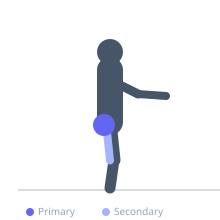
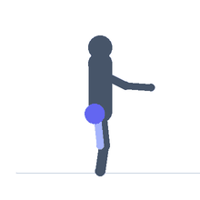

Exercise guide / Hip 90/90 Rotation
Hip 90/90 Rotation
The hip 90/90 rotation is an active mobility drill that trains the ability to transition the hips between internal and external rotation by moving both legs simultaneously from one 90-90 configuration to the opposite. Unlike the passive 90-90 stretch, this version is performed as a controlled active movement. It develops proprioceptive awareness of hip rotation and is used in hip rehabilitation, athletic movement prep, and general hip mobility programs.
Primary muscles
gluteus medius
gluteus minimus
Secondary muscles
adductor magnus
tensor fasciae latae
Stabilizers
erector spinae
Equipment
No Equipment (Bodyweight)


Starting position
- Sit on the floor with both legs in a 90-90 configuration — front leg with the shin facing forward (external rotation), rear leg to the side with the shin facing back (internal rotation).
Setup
- Use a mat. Hands can be placed on the floor beside the hips for support in early stages.
Steps
- Step 1: Begin in a 90-90 seated position.
- Step 2: Internally rotate both hips simultaneously — the front knee drops inward and the rear knee drops toward the floor in front.
- Step 3: Both legs pass through a brief neutral position in the middle.
- Step 4: Continue rotating to arrive in the 90-90 position on the opposite side.
- Step 5: Pause, then rotate back to the starting side. Each full trip counts as one rep.
Coaching cues
- Rotate both hips at the same time, not one then the other
- Move as far through each transition as your hip allows
- Gradually reduce your hand support as you gain confidence
Breathing
- Breathe freely and steadily. Do not hold the breath.
Range of motion
- Full transition from one 90-90 configuration to the other, with both hips as close to the floor as available range allows.
Tempo
- 3–4 seconds per transition, 5–10 reps each direction × 2–3 sets.
Common mistakes
- Using the hands heavily for support, which reduces core and hip engagement
- Moving too quickly — this requires deliberate slow control at each stage
- One hip excessively lagging behind the other
Safety
- If sharp hip or knee pain occurs, stop and consult a clinician
- Avoid if currently experiencing acute hip labral symptoms without clinical clearance
Training
- mobility: 5–10 reps
- mobility: 2–3 sets
- Rest: {'mobility': 30}